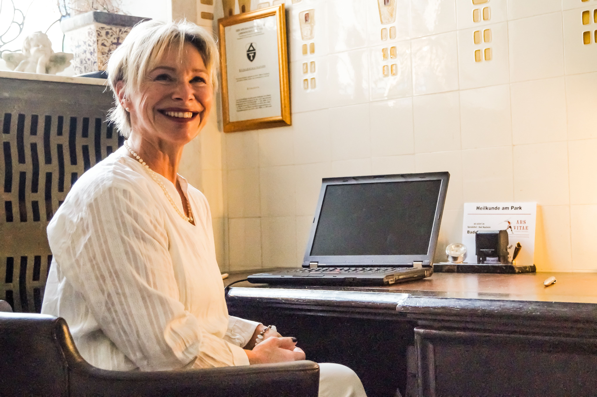

Über mich
Mein Name ist Anja Schmidt und ich begrüße sie herzlichst auf meiner Internetseite "Heilkunde am Park". Ich bin 1966 in Friedberg geboren und bin Mutter von 2 erwachsenen Töchtern. Gesundheit und ihre Verantwortung zur Heilung verfolge ich bereits mein ganzes Leben.
Nach meiner Ausbildung zur medizinischen Fachangestellten, arbeitete ich in verschiedenen Krankenhäusern bzw. Arztpraxen. Darunter war ich auch hier viele Jahre in einer Naturheilkundlichen Praxis tätig. Nach meinem zwei jährigen Studium, erlangte ich mit 39 Jahren die Heilerlaubnis. Seit diesem Zeitpunkt bin ich selbstständig in eigener Praxis in Bad Nauheim. Im August 2016 erfolgte der Umzug in das wundervolle Ambiente des Sprudelhof Bad Nauheim im Badehaus 4. Angeschlossen an das Institut für Physiotherapie "ARS VITAE".
Neben vielen anderen heilkundlichen Therapien, ist meine große Leidenschaft die Akupunktur mit ihren wunderbaren Möglichkeiten zur Linderung und Heilung vieler Beschwerden. Durch jahrelange Erfahrung ist diese effektive Behandlung fester Bestandteil meiner Therapiemethoden.
Selbstverständlich besuche ich kontinuierlich Fort- und Weiterbildungen, welche ich als weiterführende Methoden in meiner Praxis umsetze. Informieren sie sich gerne über alle weiteren Therapiemethoden meiner Praxis, hier auf der Webseite, oder besuchen sie uns im Jugendstil Ambiente des Sprudelhofes Bad Nauheim, Badehaus 4.
In der Verantwortung Ihrer Gesundheit
Anja Schmidt

Angebote
Keine Methode kann etwas bewirken, wenn nicht die Weisheit in sie fließt, die sie erst zum Leben erweckt.
Akupunktur
Die Akkupunktur, als Teilaspekt der chinesischen Medizin,erfreut sich im Westen seit langem zunehmender Beliebtheit. Hierbei werden bestimmte Akkupunkturpunkte mit Nadeln stimuliert. Mit dem Einstich in den Akupunkturpunkt wird nach Vorstellung der Chinesen das Qi (die Vitalenergie) und deren Energiefluss reguliert.
Für weitere Informationen klicken Sie hier (PDF).
Klassische Homöopathie
Nach Ansicht der klassischen Homöopathie ist nicht allein derKörper erkrankt, sonder der ganze Mensch als Einheit von Körper,Geist und Seele. So erfährt der Patient durch die Therapie auf allen drei Ebenen eine Steigerung des Wohlbefindens.
Für weitere Informationen klicken Sie hier (PDF).
Tiefenentspannung
In der australisch regenerativen Tiefenentspannung (ArT)werden sanfte Griffe mit starker Wirkund genutzt, um unterschiedliche Erfolge zu erzielen. Darunter den Körper wieder in sein Gleichgewicht zu bringen, den Körper zu entspannen, den Energiefluss in Gang zu bringen und Muskeln und Sehnen zu entspannen.
Anwendungsbereiche sind unter anderem Ishias- und Rückenschmerzen, Sehenscheidenentzündung, Knieprobleme, Stress- und Spannungszustände, Migräne, Alergien, Asthma (weitere finden Sie im PDF Dokument).Für weitere Informationen klicken Sie hier (PDF).
Eigenblut
Das Prinzip der Eigenbluttherapie, körpereigenesBlut als Fremdkörperreiz in den Organismus zu bringen und damit die Selbstheilungs- und Abwehrkräfte anzuregenist nicht neu. Indikationen, die sich in der Praxis bewährt haben: Akne, Alergien, Durchblutungsstörungen Wechseljahresbeschwerden uvm. (weutere finden Sie im PDF Dokument)
Für weitere Informationen klicken Sie hier (PDF).
Ausleitende Verfahren
Um Gift- und Schlackenstoffe auszuleiten,alte und chronische Prozesse zu lösen oder das Imunsystem und den Organismus anzuregen werden Therapien wie z.B das Schröpfen eingesetzt. Das Schröpfen oder Die Schröpfkopfmassage empfiehlt sich insbesonders bei schmerzahft verspannter Muskulatur.
Für weitere Informationen klicken Sie hier (PDF).
Anti-Aging
Junges und strahlendes Aussehen ist für immer mehrMenschen ein erklärtes Ziel. Das soll möglichst schnell, effektiv und ohne Nebenwirkungen erreich werden. Moderne Methoden machen es möglich:
Ein speziell entwickeltes Verfahren, bei dem man mit Hilfe von Ultraschall- und (jetzt neu!) Hochvolttherapie spezifische Wirkstoffe bis tief in die Haut einschleusen kann. Es wirkt wie ein optischer Jungbrunnen. Falten werden stark vermindert. Das Ergebnis ist ein frisches, straffes und jünger aussehendes Hautbild.
Eine Gesichtsbehandlung dauert 30min, empfohlen werden 6 Behandlungen über die Dauer von einem Monat. Kosten 44€ pro Behandlung incl. Wirkstoffampulle.
Rauchentwöhnung Mesotherapie
Die Gesundheit, finanzielle Ersparnis, frischeres Aussehen - es gibt viele Gründemit dem Rauchen aufzuhören! Die Mesotherapie hat sich als wirksame Methode für die Rauchentwöhnung bewährt. Das Verfahren, das auch als "Rauchfrei-Spritze" bekannt ist, führt in den meisten Fällen zu einer Aversion gegen Zigaretten, schwächt Entzugserscheinungen wie vermehrtes Hungergefühl oder Stimmungsschwankungen und ist dabei so gut wie frei von Nebenwirkungen.
Bei der Mesotherapie handelt es sich um ein minimalinvasives Verfahren, bei dem individuell zusammengestellte, niedrig dosierte Medikamente und Wirkstoffe am Ort der Beschwerde injeziert werden. In der Regel ist nur eine einzige mesotherapeutische Behandlung notwendig (Kostenpunkt 80€). Falls es doch zu einem Rückfall oder Entzugserscheinungen kommt, kann die Behandlung jederzeit wiederholt werden.
Infusionstherapien
Durch eine Infusion werden hohe Vitamin-C-Spiegel im Blut erreicht und es kann mehr Vitamin C vom Gewebe aufgenommen werden.Durch Nahrung und Tabletten sind solche hohen Blutspiegel nicht zu erzielen. Ein starker Vitamin C Mangel kann vorliegen bei:
- Akuten und chronischen Infekten
- Chronisch entzündlichen Erkrankungen, z.B. Arthritis
- Aufnahmestörungen im Darm
- Nach Operationen
- Rauchern
Kontakt
Nördlicher Park 4, 61231 Bad Nauheim
Badehaus 4, Sprudelhof
Termine nach Vereinbarung.
Telefon: +49 6032 3075787
E-Mail: schmidt.anja@gmx.net
Fax: 06032/3075786